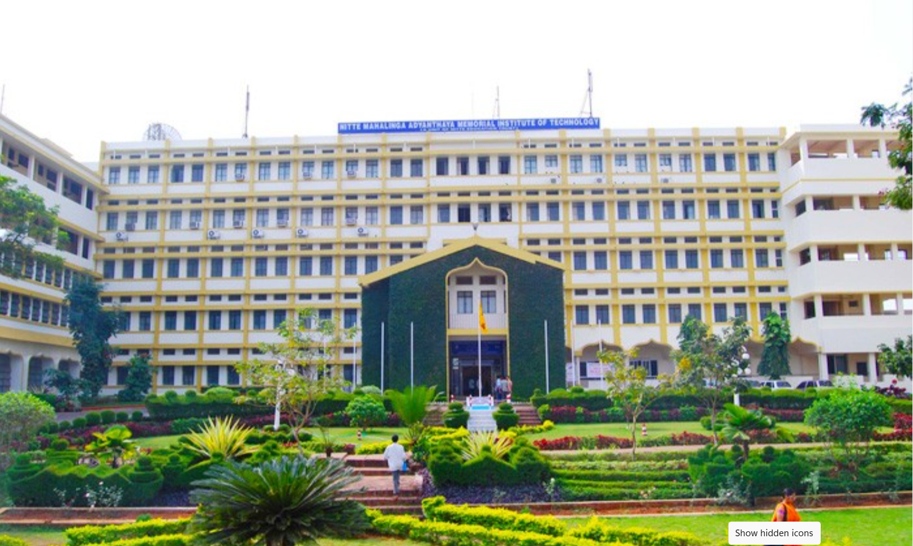
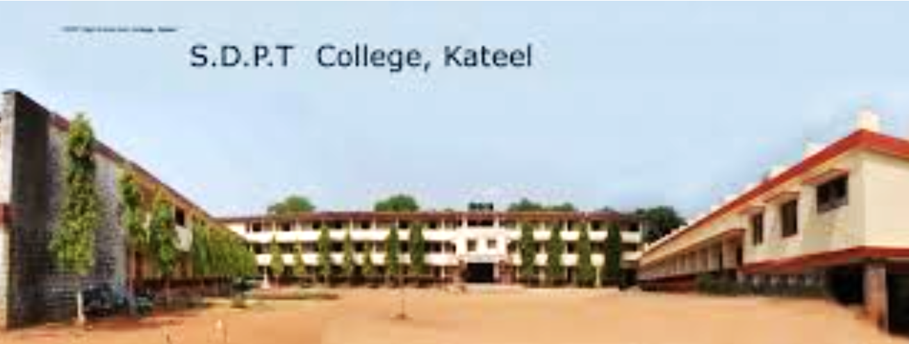
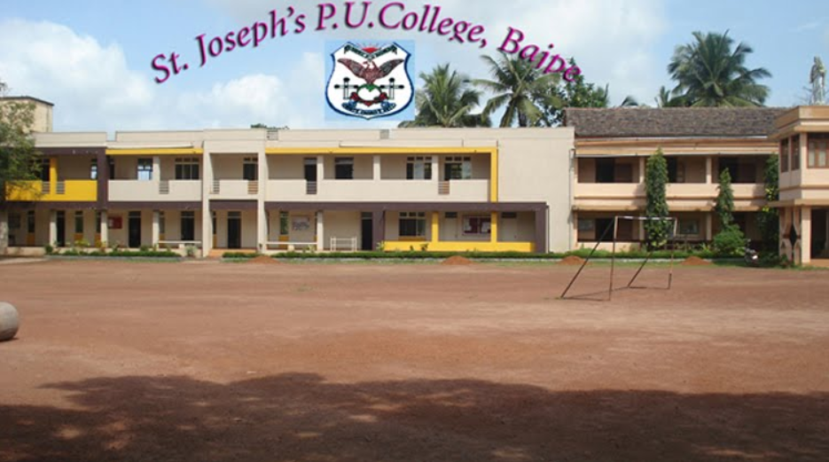

B.Tech · 2023 – 2027
NMAM Institute of Technology, Nitte
B.Tech in Electronics and Communication Engineering.
I am interested in IoT, embedded systems, digital design, signal processing, VLSI, automation and AI-based healthcare solutions.
Motivated Electronics and Communication Engineering student with knowledge in digital systems, signal processing and embedded technologies. My goal is to apply technical skills to real-world engineering problems and gain industry experience.
Developing AI-based healthcare applications using Python, LLMs, RAG and Hugging Face models for medical information retrieval and conversational AI.
Gained exposure to industrial instrumentation systems, control loops, process measurement devices, transmitters, valves, operational reporting and safety procedures.
The education section now includes the three photos you shared, with the institution names and years.

B.Tech in Electronics and Communication Engineering.

Pre-university education completed before entering engineering.

Completed SSLC education.
Applied AI Learning by Microsoft.
Cloud and Azure learning through AINNOVATION 2025.
MATLAB for Signal Processing.